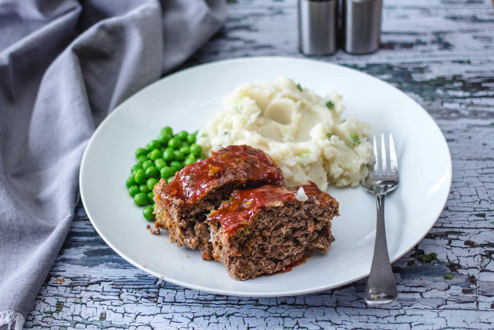

Meat Loaf

Description
Get back to basics with this easy meatloaf recipe. It's quick, traditional, delicious, and it's sure to please everyone at your table.
Make our most popular lasagna today to find out what all the fuss is about!
Ingredients
- For the loaf
- Ground beef
- An egg
- An onion
- Milk
- Bread crumbs
- Salt
- Pepper
- For the sauce
- Ketchup
- Brown sugar
- Mustard
Tip: You can use crushed crackers in place of bread crumbs, if you prefer.
Steps
- Mix the loaf ingredients, then transfer to a loaf pan.
- Mix the sauce ingredients, then pour over the loaf.
- Bake in the preheated oven until the meatloaf is no longer pink in the center.